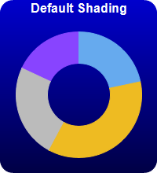
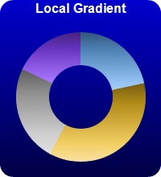
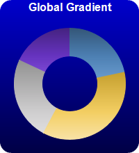
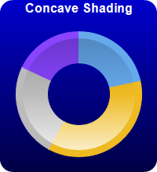
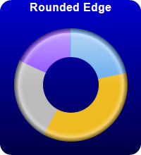
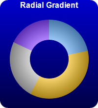
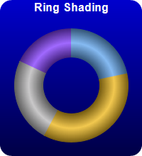

This example demonstrates various sector shading effects applicable to 2D donut charts.
ChartDirector 7.1 (C++ Edition)
2D Donut Shading







Source Code Listing
#include "chartdir.h"
void createChart(int chartIndex, const char *filename)
{
// The data for the pie chart
double data[] = {18, 30, 20, 15};
const int data_size = (int)(sizeof(data)/sizeof(*data));
// The colors to use for the sectors
int colors[] = {0x66aaee, 0xeebb22, 0xbbbbbb, 0x8844ff};
const int colors_size = (int)(sizeof(colors)/sizeof(*colors));
// Create a PieChart object of size 200 x 220 pixels. Use a vertical gradient color from blue
// (0000cc) to deep blue (000044) as background. Use rounded corners of 16 pixels radius.
PieChart* c = new PieChart(200, 220);
c->setBackground(c->linearGradientColor(0, 0, 0, c->getHeight(), 0x0000cc, 0x000044));
c->setRoundedFrame(0xffffff, 16);
// Set donut center at (100, 120), and outer/inner radii as 80/40 pixels
c->setDonutSize(100, 120, 80, 40);
// Set the pie data
c->setData(DoubleArray(data, data_size));
// Set the sector colors
c->setColors(Chart::DataColor, IntArray(colors, colors_size));
// Demonstrates various shading modes
if (chartIndex == 0) {
c->addTitle("Default Shading", "bold", 12, 0xffffff);
} else if (chartIndex == 1) {
c->addTitle("Local Gradient", "bold", 12, 0xffffff);
c->setSectorStyle(Chart::LocalGradientShading);
} else if (chartIndex == 2) {
c->addTitle("Global Gradient", "bold", 12, 0xffffff);
c->setSectorStyle(Chart::GlobalGradientShading);
} else if (chartIndex == 3) {
c->addTitle("Concave Shading", "bold", 12, 0xffffff);
c->setSectorStyle(Chart::ConcaveShading);
} else if (chartIndex == 4) {
c->addTitle("Rounded Edge", "bold", 12, 0xffffff);
c->setSectorStyle(Chart::RoundedEdgeShading);
} else if (chartIndex == 5) {
c->addTitle("Radial Gradient", "bold", 12, 0xffffff);
c->setSectorStyle(Chart::RadialShading);
} else if (chartIndex == 6) {
c->addTitle("Ring Shading", "bold", 12, 0xffffff);
c->setSectorStyle(Chart::RingShading);
}
// Disable the sector labels by setting the color to Transparent
c->setLabelStyle("", 8, Chart::Transparent);
// Output the chart
c->makeChart(filename);
//free up resources
delete c;
}
int main(int argc, char *argv[])
{
createChart(0, "donutshading0.png");
createChart(1, "donutshading1.png");
createChart(2, "donutshading2.png");
createChart(3, "donutshading3.png");
createChart(4, "donutshading4.png");
createChart(5, "donutshading5.png");
createChart(6, "donutshading6.png");
return 0;
}